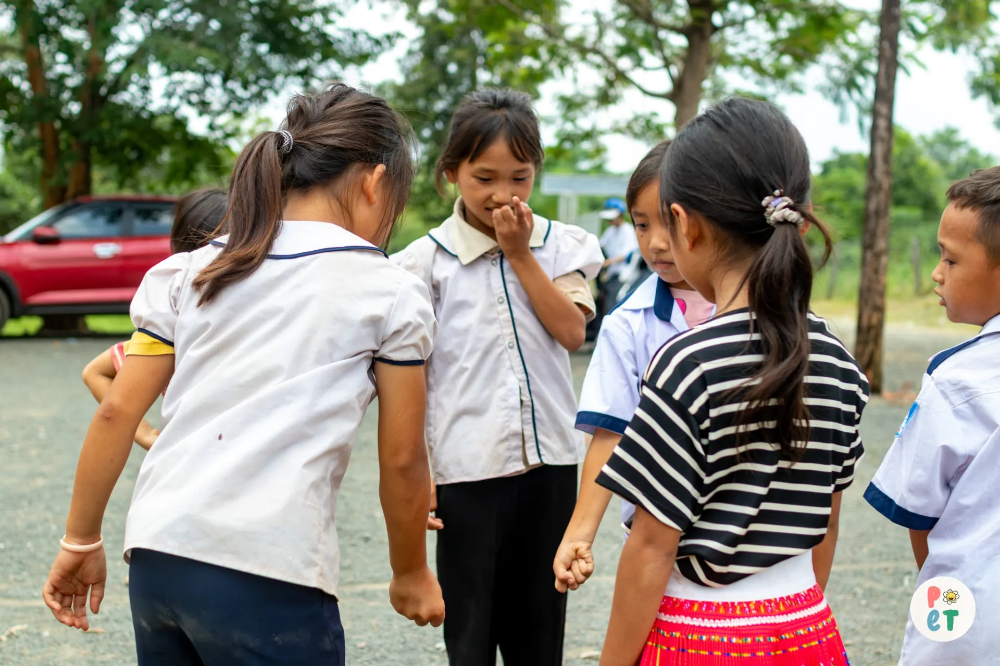

Chuyển khoản trực tiếp qua VietQR
Ủng hộ tự nguyện, tuỳ tâm vào số tài khoản thiện nguyện chính thức của CLB. Mọi đóng góp đều có sao kê để đối chiếu.

Trường Tiểu học & Trung học cơ sở Hoàng Văn Thụ · Ea Kiết, Đắk Lắk
Ở điểm trường Ea Kiết, ngoài cửa lớp…
…khoảng sân vẫn lầy trơn mỗi mùa mưa, những thiết bị vui chơi đã hư hỏng.
POET muốn góp tiếp một phần nhỏ vào câu chuyện ấy: một khoảng sân an toàn hơn, để sau tiếng trống tan tiết, các em được chạy nhảy, được chơi cùng bạn.
Bởi có những điều lớn lên trong giờ học và cũng có những điều lớn lên khi một đứa trẻ được vui chơi.
Chiến dịch Mùa 6 · 2026–2027
“Niềm vui đơn thuần”: chơi vui, chơi khoẻ ngay trong sân trường.
Bên cạnh việc học, sức khoẻ tinh thần của các em nhỏ vùng khó khăn cũng cần được nuôi dưỡng đúng cách. Mùa này, POET mang một “công viên” nhỏ đến điểm trường để các em được chơi thật vui và thật khoẻ.
Thay vì chỉ trao quà, POET dựng một ngày hội chạy trạm ngay tại sân trường. Các em được khám phá, vui chơi an toàn và mở rộng thế giới quan.
Giới thiệu và hướng dẫn các em tìm hiểu về các nhóm ngành nghề trong xã hội qua bài giảng sinh động kết hợp thực hành trực tiếp.
Không gian vui nhộn với những trò chơi dân gian và hiện đại, giúp các em làm quen bạn mới, thoả sức cười đùa và lưu giữ kỷ niệm tuổi thơ.
Nơi các em chạy nhảy, rèn luyện thể lực vừa sức và cổ vũ đồng đội trong không khí hào hứng, năng động.
Hoàn thành thử thách ở các trạm, mỗi em nhận phiếu để đổi những món quà nhỏ xinh bất ngờ mà mình yêu thích.
Rạp chiếu phim mini giữa núi rừng Tây Nguyên, để các em vừa thư giãn vừa thưởng thức những câu chuyện nhân văn giàu cảm xúc.
Góc đọc sách yên bình với hàng trăm đầu truyện tranh, sách khoa học thường thức được POET chọn riêng cho lứa tuổi cấp 1.
Mỗi khoản dưới đây được tính từ khảo sát nhu cầu thực tế tại điểm trường Ea Kiết. POET công khai từng khoản để mọi người và nhà tài trợ cùng theo dõi.
| STT | Khoản mục hỗ trợ | Số lượng | Đơn giá | Thành tiền |
|---|---|---|---|---|
| 01 | Quạt treo tường cho các phòng họcLàm mát lớp học những ngày nắng gắt Tây Nguyên17 cái × 350.000 đ | 17 cái | 350.000 đ | 5.950.000 đ |
| 02 | Xe đạp mới cho học sinh ở xa, hoàn cảnh đặc biệtGiúp các em rút ngắn quãng đường vượt đồi đến trường6 chiếc × 2.000.000 đ | 6 chiếc | 2.000.000 đ | 12.000.000 đ |
| 03 | Dụng cụ học tập: bút gel, bút chì, gôm, thước kẻĐủ trang bị cho 300 em học sinh cấp 1300 phần × 70.000 đ | 300 phần | 70.000 đ | 21.000.000 đ |
| 04 | Vở trắng 5 ô ly: 10 quyển, định lượng 120 gsmGiấy chống loá, dùng được cả năm học300 phần × 100.000 đ | 300 phần | 100.000 đ | 30.000.000 đ |
| 05 | Áo đồng phục mới: áo có cổ, ấm áp, chỉn chuTạo cảm giác gắn kết và giữ ấm cho các em300 áo × 150.000 đ | 300 áo | 150.000 đ | 45.000.000 đ |
| 06 | Góc trò chơi sân trường: cầu tuột & đồ chơi vận độngThay cầu tuột đã gãy hỏng, tạo sân chơi an toàn2 gói × 1.500.000 đ | 2 gói | 1.500.000 đ | 3.000.000 đ |
| 07 | Tổ chức hoạt động tại trường: trạm trò chơi, văn nghệ, chiếu phimVật phẩm trò chơi, quà thưởng, rạp phim mini và lửa trại1 gói × 5.000.000 đ | 1 gói | 5.000.000 đ | 5.000.000 đ |
| Tổng ngân sách Mùa 6 | 121.950.000 đ | |||
Dù là cá nhân, thương hiệu hay bạn trẻ muốn góp sức, Công viên Niềm vui luôn có một chỗ dành cho bạn.
Ủng hộ tự nguyện, tuỳ tâm vào số tài khoản thiện nguyện chính thức của CLB. Mọi đóng góp đều có sao kê để đối chiếu.
Hội chợ cộng đồng, nơi các thương hiệu đồng hành mang sản phẩm đến giao lưu. Tiền vé góp vào quỹ chương trình.
Bộ sưu tập merch của POET. Toàn bộ doanh thu góp vào quỹ chung.
Trở thành một “Little Joy” trong chiến dịch Big Joy Little Joy: góp một phần doanh thu sản phẩm để cùng xây Công viên Niềm vui.
Hỗ trợ hiện kim hoặc nguồn lực thiết thực cho Công viên Niềm vui. POET trao đổi từng đề xuất theo nhu cầu điểm trường và khả năng của đơn vị.
Đơn tuyển tình nguyện viên Mùa 6 đã đóng. Theo dõi Facebook POET để nhận thông tin tuyển quân Mùa 7 sớm nhất nha!
Đối ngoại, Vận hành, Nhân sự, Truyền thông: mỗi ban một việc, cùng chung một tinh thần.
Dấu ấn tự hào

Mùa 5 · TP. Hồ Chí Minh
Với sự tham gia của 120 khán giả và 5 nhà tài trợ, chương trình đã lan tỏa thông điệp tích cực về sức khỏe tinh thần, tạo sân chơi cho các nghệ sĩ trẻ và góp quỹ cải thiện chất lượng học tập tại Trường Tiểu học Mỹ Thạnh Bắc (Đức Huệ, Long An).

Mùa 5 · Mỹ Thạnh Bắc, Long An
POET trao tặng 30 suất đồ dùng học tập, 10 suất học bổng, 5 xe đạp, 3 quạt treo tường và 3 tủ nhôm đựng tài liệu cho 3 lớp học tại điểm trường. Các em còn cùng tham gia hoạt động vui chơi chạy trạm với chủ đề bảo vệ môi trường.